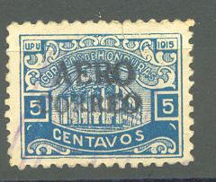
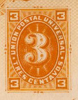

{kind=link}

Return To Catalogue - Honduras
Note: on my website many of the
pictures can not be seen! They are of course present in the
catalogue;
contact me if you want to purchase the catalogue.
5 c blue (overprint in black, blue or red) 10 c blue (overprint in black or red) 20 c brown (overprint in black or blue) 50 c red 1 P green Surcharged '25' on 1 c brown '25' (blue) on 5 c blue '25' (blue) on 20 c brown
Value of the stamps |
|||
vc = very common c = common * = not so common ** = uncommon |
*** = very uncommon R = rare RR = very rare RRR = extremely rare |
||
| Value | Unused | Used | Remarks |
| All values | RR to RRR | RR to RRR | |
Since all these stamps are very rare and the basic stamps are quite cheap, many forged overprints exist, example:

1 c green 2 c red 5 c blue 10 c yellow 20 c brown 25 c red
1 c yellow 2 c blue 5 c green 10 c red 20 c blue 25 c brown

1 c grey 2 c red 5 c green 10 c blue 20 c red 25 c blue
1 c green 2 c red 5 c blue 10 c brown 20 c red 25 c green
(Sorry, no picture available yet)
2 c red on yellow 3 c blue
(Reduced size)
2 c red 3 c blue
2 c yellow 2 c red on yellow 3 c red on yellow
2 c green 3 c blue
2 c black 3 c black

2 c green 3 c orange
The first fiscal stamps in Honduras were issued in 1877 (date in center, 3 values: 2 r black, 2 r black on yellow and 2 r black on green).
Later issues (1897 to 1904), with inscription "REPUBLICA MAYOR DE C.A." or "CENTRO AMERICA" on top:
They also exist with blue or red background overprint (1903). In 1898-99 some values were sporadically used for postal purposes.
{kind=link}